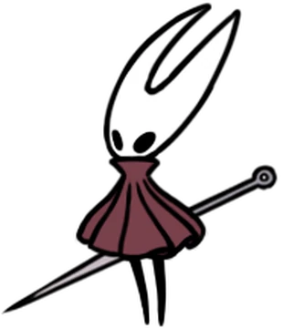

Hornet is the main character from the game HollowKnight: SilkSong, The sequel to HollowKnight. I dont watch many movies or read many books so i chose a video game character. I chose specifically Hornet because the game is fairly new and when it released multiple game selling services were taken down plus this character also just has a nice design. The game took 7 years and single-handedly delayed the whole indie community as everyone pushed their games release date back to avoid their hype being lost in the hype of SilkSong. Many games were pushed back weeks to a month. SilkSong has much lore and if i were to put everything here it would take a while and i dont even understand it fully as i have not played it myself.
Hornet is 13.2 cm and wears a small cloak with a needle on their back.
The creators TeamCherry had to go back to change the way enemies were designed cause hornet is taller and faster than the original knight. As said before the game took 7 years so it was a common joke to say it would never come out and thus when it finally did there was the joke that always happens of "we got X before GTA 6". In SilkSong you can talk to NPCS unlike in hollowKnight where you cannot.